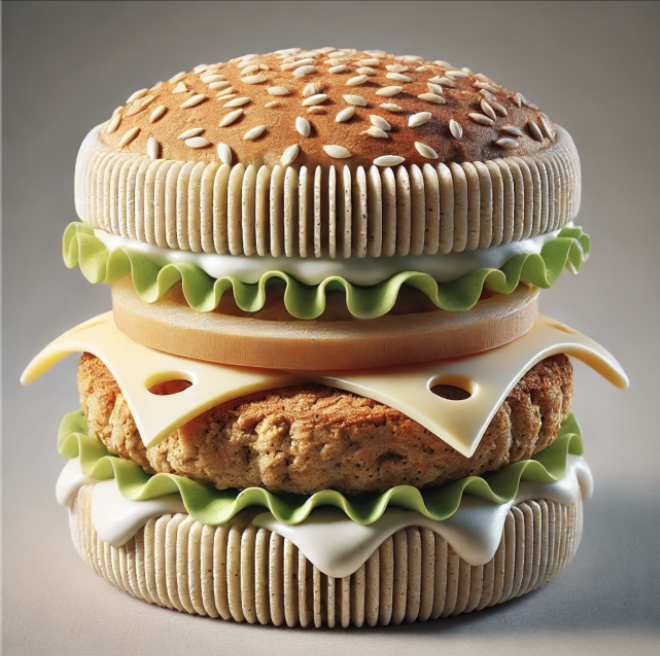

Making a Plant-Based Burger
Step 1: Print the Burger Bun
• Select the dough material and ensure it is at 180°C–200°C.
• Print the bottom bun layer first, followed by the top bun.
• Use a simple flat or round design, or add artistic patterns.
Step 2: Print the Plant-Based Patty
• Switch to the patty mixture.
• Set the extrusion temperature to 80°C–100°C.
• Print the patty in a circular shape, layer by layer, to create a fibrous texture resembling meat.
Step 3: Add Vegetables
• Load the vegetable components (e.g., lettuce, tomato).
• Print each vegetable in thin, crisp layers for fresh appearance and texture.
Step 4: Print the Sauce
• Load the sauce mixture into the printer.
• Print thin, decorative layers or dots of sauce onto the bun or patty.
Step 5: Assemble the Burger
• Stack the printed components in the desired order (bun, sauce, patty, vegetables, top bun).
• If the printer supports multi-material simultaneous printing, the assembly happens automatically.
Step 6: Serve
• Allow the burger to cool slightly and solidify before serving.